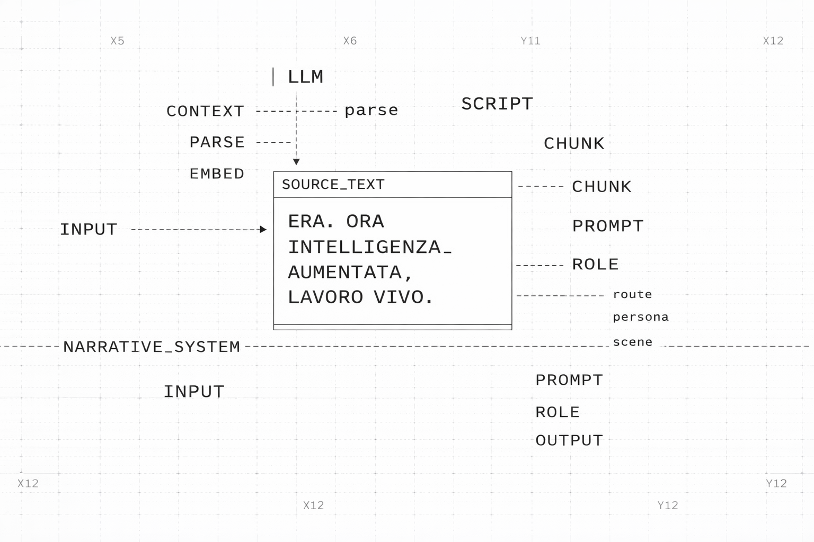

From book to prototype, from prototype to experience.

Too abstract to adapt directly
The source material is rich but highly conceptual. A direct translation risked becoming a summary or a fragmented experience.
Build a narrative system
Lia becomes the anchor: a poetic, reflective intelligence. Around her, a prototype system and an exhibition journey hold the story together.
Lia 1.0 + engines + experiential arc
A coherent foundation now exists: Lia 1.0 as concept, IdenLab and Systems Atlas as engines, and a designed path for public interaction.
From a book to a question.
Rather than adapting the book as content, the project introduces Lia: a poetic, reflective intelligence designed to hold complexity and guide people through it.
What becomes of work when machines do tasks better?
The point is not only replacement. It is how people and organizations can identify forms of contribution that remain meaningful in a new landscape.
Lia visual / portrait / UI still
Atmospheric still linking literary origin and public experience.
Drag orbit · Wheel zoom · Right-drag pan · Click anchors